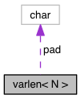

RaftLib
0.9a
C++ Stream Processing Template Library
Public Attributes
|
List of all members
varlen< N > Struct Template Reference
Collaboration diagram for varlen< N >:

[
legend
]
Public Attributes
char
pad
[N]
Detailed Description
template<std::size_t N>
struct varlen< N >
Definition at line
8
of file
doesntFitInCacheLine.cpp
.
The documentation for this struct was generated from the following files:
doesntFitInCacheLine.cpp
fitInCacheLine.cpp
Generated on Mon Dec 5 2016 12:42:39 for RaftLib by
1.8.12
 1.8.12
1.8.12